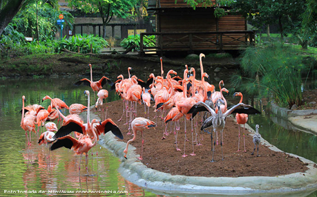
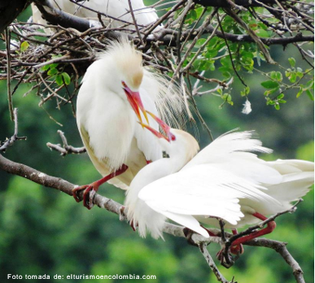

Lo Imperdible
Ya sea que tengas medio día, un día o todo el fin de semana disponible, hay planes en Cali para todos los gustos. Estas son algunas recomendaciones para que aproveches tu estadía.
•Malecón Puerta de Oro: Puedes disfrutar una caminata por el malecón y tomarte algo con amigos. Se puede iniciar la noche, tardeando en esta locación y después buscar otras actividades
•Ventana al Mundo: No son muchas palabras que uno necesita para describir este colosal monumento que le hace honor a la ciudad y a sus habitantes. El barranquillero no tiene fronteras en su vista ni en su mente para darle rienda suelta a su imaginación. Un aire de libertad y de ensoñación se vive al visitar este monumento. Es muy bonito y la rotonda es agradable, parqueas y puedes sacar fotografías. Se ve increíble tanto de noche como de día.

•Museo del Caribe: Un museo lleno de riqueza cultural, que trasciende Las diferentes épocas de nuestro ancestro cultural, que nos traslada a Las diversas regiones del Caribe en una muestra llena de colorido, creatividad y tradición musical.

•Catedral Maria Reina: La catedral de Cali es una de las obras más importante de esta bella ciudad, un lugar ideal para reflexionar y encontrarse con Dios.

•Castillo de Salgar: Hermoso castillo abierto al público. El horario es de 9am a 6pm. Hay dos restaurantes, pero uno puede hacer picnic y ver el atardecer.